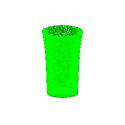

**CMSC848F-3D Vision**
**Project 3**
**Darshit Desai**
**Dir id: darshit; Email: darshit@umd.edu**
Overview
===============================================================================
In this assignment, you will implement a PointNet based architecture for classification and segmentation with point clouds (you don't need to worry about the tranformation blocks). Q1 and Q2 focus on implementing, training and testing models. Q3 asks you to quantitatively analyze model robustness. Q4 (extra point) involves locality.
`models.py` is where you will define model structures. `train.py` loads data, trains models, logs trajectories and saves checkpoints. `eval_cls.py` and `eval_seg.py` contain script to evaluate model accuracy and visualize segmentation result. Feel free to modify any file as needed.
The github repository for this assignment is [here](https://github.com/darshit-desai/3D-Object-Classification-and-Segmentation-3D-Vision)
Data Preparation
-------------------------------------------------------------------------------
Download zip file (~2GB) from https://drive.google.com/file/d/1wXOgwM_rrEYJfelzuuCkRfMmR0J7vLq_/view?usp=sharing. Put the unzipped `data` folder under root directory. There are two folders (`cls` and `seg`) corresponding to two tasks, each of which contains `.npy` files for training and testing.
Q1. Classification Model (40 points)
-------------------------------------------------------------------------------
Implement the classification model in `models.py`.
Deliverables: On your website,
- Report the test accuracy.
- Visualize a few random test point clouds and mention the predicted classes for each. Also visualize at least 1 failure prediction for each class (chair, vase and lamp), and provide interpretation in a few sentences.
**Answer-** For this part I followed the architecture given in the PointNet paper, we only have 3 classes, and the test accuracy is mentioned below along with the results of successful and failure cases of classification
Test accuracy : 97.69 %
Note this is the average test accuracy of classification over all classes.
The implementation details of the architecture are as follows:
```BASH
Point Net classification Model
cls_model(
(feature_extract1): Sequential(
(0): Conv1d(3, 64, kernel_size=(1,), stride=(1,))
(1): BatchNorm1d(64, eps=1e-05, momentum=0.1, affine=True, track_running_stats=True)
(2): ReLU()
(3): Conv1d(64, 64, kernel_size=(1,), stride=(1,))
(4): BatchNorm1d(64, eps=1e-05, momentum=0.1, affine=True, track_running_stats=True)
(5): ReLU()
(6): Conv1d(64, 64, kernel_size=(1,), stride=(1,))
(7): BatchNorm1d(64, eps=1e-05, momentum=0.1, affine=True, track_running_stats=True)
(8): ReLU()
)
(features_extract2): Sequential(
(0): Conv1d(64, 128, kernel_size=(1,), stride=(1,))
(1): BatchNorm1d(128, eps=1e-05, momentum=0.1, affine=True, track_running_stats=True)
(2): ReLU()
(3): Conv1d(128, 1024, kernel_size=(1,), stride=(1,))
(4): BatchNorm1d(1024, eps=1e-05, momentum=0.1, affine=True, track_running_stats=True)
(5): ReLU()
)
(classifier): Sequential(
(0): Linear(in_features=1024, out_features=512, bias=True)
(1): BatchNorm1d(512, eps=1e-05, momentum=0.1, affine=True, track_running_stats=True)
(2): ReLU()
(3): Linear(in_features=512, out_features=256, bias=True)
(4): BatchNorm1d(256, eps=1e-05, momentum=0.1, affine=True, track_running_stats=True)
(5): ReLU()
(6): Linear(in_features=256, out_features=3, bias=True)
(7): BatchNorm1d(3, eps=1e-05, momentum=0.1, affine=True, track_running_stats=True)
(8): ReLU()
)
)
```
### Results: Correct Classifications / Predictions
Point Cloud
Ground Truth Class
Predicted Class
Chair 1 360 degree render
Chair (0)
Chair (0)
Chair 10 360 degree render
Chair (0)
Chair (0)
Chair 30 360 degree render
Chair (0)
Chair (0)
Vases 11 360 degree render
Vase (1)
Vase (1)
Vases 15 360 degree render
Vase (1)
Vase (1)

Vases 20 360 degree render
Vase (1)
Vase (1)
Vases 20 360 degree render
Vase (1)
Vase (1)
Lamps 5 360 degree render
Lamp (2)
Lamp (2)
Lamps 15 360 degree render
Lamp (2)
Lamp (2)
Lamps 30 360 degree render
Lamp (2)
Lamp (2)
### Results: Incorrect Classications / Predictions
**Interpretation: ** From the below results my interpretation is that the lamps and vases class are the most misidentified class and that is because of the relative similarity between the two class 3d structures,
Secondly, it could also be possible that with more data this variation in results could be reduced as seen with chairs where only one false positive was reported making it by far the most accurate
predictions across classes.
Point Cloud
Ground Truth Class
Predicted Class
Chair 12 360 degree render
Chair (0)
Lamp (2)
Vases 19 360 degree render
Vase (1)
Lamp (2)
Vases 12 360 degree render
Vase (1)
Lamp (2)
Vases 15 360 degree render
Vase (1)
Lamp (2)
Vases 30 360 degree render
Vase (1)
Lamp (2)
Lamps 20 360 degree render
Lamp (2)
Vase (1)
Lamps 17 360 degree render
Lamp (2)
Vase (1)
Lamps 24 360 degree render
Lamp (2)
Vase (1)
Lamps 31 360 degree render
Lamp (2)
Vase (1)
Q2. Segmentation Model (40 points)
-------------------------------------------------------------------------------
Take a look at the `render_images` function in `main.py`. It loops through a set of cameras, generates rays for each pixel on a camera, and renders these rays using a `Model` instance.
### Visualization
You can run the code for part 1 with:
```bash
python main.py --config-name=box
```
Once you have implemented these methods, verify that your output matches the TA output by visualizing both `xy_grid` and `rays` with the `vis_grid` and `vis_rays` functions in the `render_images` function in `main.py`. **By default, the above command will crash and return an error**. However, it should reach your visualization code before it does.
**Answer-** These are my outputs after implementing `get_pixels_from_image` in `ray_utils.py` and `get_rays_from_pixels` in `ray_utils.py` given below:
My image output for xy grid
My image output for rays
TA's image output for xy grid
TA's image output for rays
Point sampling (10 points)
-------------------------------------------------------------------------------
### Visualization
Once you have done this, use the `render_points` method in `render_functions.py` in order to visualize the point samples from the first camera. They should look like this:
**Answer-** These are my outputs compared with TA outputs after implementing `StratifiedSampler` in `sampler.py` given below:
Note I modified the function call of rasterizer to explicity change the background to black,
My ray visualization
TA's ray visualization
Volume rendering (30 points)
-------------------------------------------------------------------------------
Finally, we can implement volume rendering! With the `configs/box.yaml` configuration, we provide you with an `SDFVolume` instance describing a box. You can check out the code for this function in `implicit.py`, which converts a signed distance function into a volume. If you want, you can even implement your own `SDFVolume` classes by creating new signed distance function class, and adding it to `sdf_dict` in `implicit.py`. Take a look at [this great web page](https://www.iquilezles.org/www/articles/distfunctions/distfunctions.htm) for formulas for some simple/complex SDFs.
You'll then use the following equation to render color along a ray:

where `σ` is density, `Δt` is the length of current ray segment, and `L_e` is color:

Compute the weights `T * (1 - exp(-σ * Δt))` in `VolumeRenderer._compute_weights`, and perform the summation in `VolumeRenderer._aggregate`. Note that for the first segment `T = 1`. (Hint: using torch.cumprod would be useful in computing the transmittance)
Use weights, and aggregation function to render *color* and *depth* (stored in `RayBundle.sample_lengths`).
### Visualization
By default, your results will be written out to `images/part_1.gif`. Provide a visualization of the depth in your write-up.
**Answer-**
My visualization for the 360 render of cube and the depth image is as given below:
360 degree render of box
Depth image render of box
Optimizing a basic implicit volume
===============================================================================
Random ray sampling (5 points)
-------------------------------------------------------------------------------
Since you have now implemented a differentiable volume renderer, we can use it to optimize the parameters of a volume! We have provided a basic training loop in the `train` method in `main.py`.
Depending on how many sample points we take for each ray, volume rendering can consume a lot of memory on the GPU (especially during the backward pass of gradient descent). Because of this, it usually makes sense to sample a subset of rays from a full image for each training iteration. In order to do this, implement the `get_random_pixels_from_image` method in `ray_utils.py`, invoked here:
```python
xy_grid = get_random_pixels_from_image(cfg.training.batch_size, image_size, camera) # TODO: implement in ray_utils.py
```
Loss and training (5 points)
-------------------------------------------------------------------------------
Replace the loss in `train` with mean squared error between the predicted colors and ground truth colors `rgb_gt`.
Once you've done this, you can run train a model with
```bash
python main.py --config-name=train_box
```
This will optimize the position and side lengths of a box, given a few ground truth images with known camera poses (in the `data` folder). Report the center of the box, and the side lengths of the box after training, rounded to the nearest `1/100` decimal place.
**Answer-** Here is the center of the box and their respective side lengths after training:
```bash
Box center: (0.2502206563949585, 0.25057458877563477, -0.00048012484330683947)
Box side lengths: (2.005105972290039, 1.503570318222046, 1.5033116340637207)
```
Visualization
-------------------------------------------------------------------------------
The code renders a spiral sequence of the optimized volume in `images/part_2.gif`. Compare this gif to the one below, and attach it in your write-up:
**Answer-** Here is the gif of the spiral sequence of the optimized volume compared with TA's output:
360 degree render of the optimized volume with random sampling (My output)
TA's output for Part 2
Optimizing a Neural Radiance Field (NeRF) (30 points)
===============================================================================
In this part, you will implement an implicit volume as a Multi-Layer Perceptron (MLP) in the `NeuraRadianceField` class in `implicit.py`. This MLP should map 3D position to volume density and color. Specifically:
1. Your MLP should take in a `RayBundle` object in its forward method, and produce color and density for each sample point in the RayBundle.
2. You should also fill out the loss in `train_nerf` in the `main.py` file.
You will then use this implicit volume to optimize a scene from a set of RGB images. We have implemented data loading, training, checkpointing for you, but this part will still require you to do a bit more legwork than for Parts 1 and 2. You will have to write the code for the MLP yourself --- feel free to reference the NeRF paper, though you should not directly copy code from an external repository.
Implementation
-------------------------------------------------------------------------------
Here are a few things to note:
1. For now, your NeRF MLP does not need to handle *view dependence*, and can solely depend on 3D position.
2. You should use the `ReLU` activation to map the first network output to density (to ensure that density is non-negative)
3. You should use the `Sigmoid` activation to map the remaining raw network outputs to color
4. You can use *Positional Encoding* of the input to the network to achieve higher quality. We provide an implementation of positional encoding in the `HarmonicEmbedding` class in `implicit.py`.
**Answer-** Here's the model that I implemented using HarmonicEmbedding for positional encoding and I used the MLP architecture MLPwithskips given in the starter code as given below:
```BASH
Nerf model:-
Model(
(implicit_fn): NeuralRadianceField(
(harmonic_embedding_xyz): HarmonicEmbedding()
(MultiLP): MLPWithInputSkips(
(mlp): ModuleList(
(0): Sequential(
(0): Linear(in_features=39, out_features=128, bias=True)
(1): ReLU(inplace=True)
)
(1): Sequential(
(0): Linear(in_features=128, out_features=128, bias=True)
(1): ReLU(inplace=True)
)
(2): Sequential(
(0): Linear(in_features=128, out_features=128, bias=True)
(1): ReLU(inplace=True)
)
(3): Sequential(
(0): Linear(in_features=167, out_features=128, bias=True)
(1): ReLU(inplace=True)
)
(4): Sequential(
(0): Linear(in_features=128, out_features=128, bias=True)
(1): ReLU(inplace=True)
)
(5): Sequential(
(0): Linear(in_features=128, out_features=128, bias=True)
(1): ReLU(inplace=True)
)
)
)
(relu): ReLU()
(sigmoid): Sigmoid()
(linear1): Linear(in_features=128, out_features=4, bias=True)
)
(sampler): StratifiedRaysampler()
(renderer): VolumeRenderer()
)
```
Visualization
-------------------------------------------------------------------------------
You can train a NeRF on the lego bulldozer dataset with
```bash
python main.py --config-name=nerf_lego
```
This will create a NeRF with the `NeuralRadianceField` class in `implicit.py`, and use it as the `implicit_fn` in `VolumeRenderer`. It will also train a NeRF for 250 epochs on 128x128 images.
Feel free to modify the experimental settings in `configs/nerf_lego.yaml` --- though the current settings should allow you to train a NeRF on low-resolution inputs in a reasonable amount of time. After training, a spiral rendering will be written to `images/part_3.gif`. Report your results. It should look something like this:
**Answer-** Here is the gif of the spiral sequence of the optimized volume compared with TA's output:
360 degree render of the Lego Bulldozer (My output)